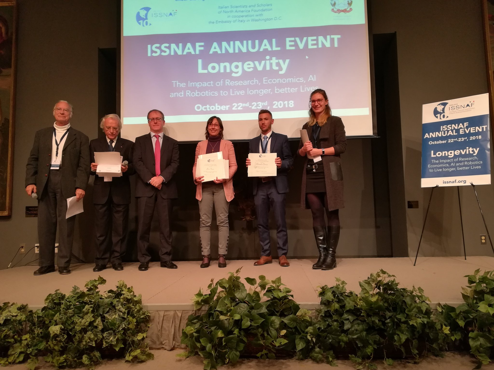
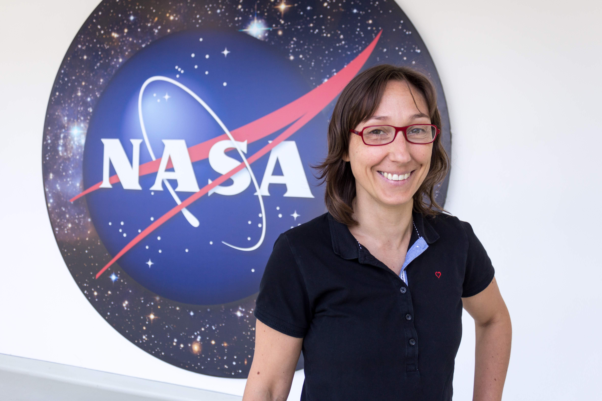

A Short Bio
I was born in Pernumia, a little village near Padova, in the north-est of Italy. I first started "staring at the stars" when I was three years old, at least that's what my 90-ish year old ant Antonietta will tell you, along with anyone who knows me since when I was born. I have always been fascinated by our Universe, our Moon and other nearby planets, distant galaxies. I imagined other worlds and visited them reading the tales of Asimov. To date in my life I never got to meet space travelers other than the human kind.
I carried out my studies at the University of Padova where I obtained both my master and my PhD degree in Physics in 2013 under the supervision of Prof. Denis Bastieri. During my academic training I had the opportunity of interfacing with a broad and international scientific community. I have spent several months at the Stanford University as a visiting scholar working under the supervision of Prof. G. Madejski, and at the Berkeley Space Sciences Laboratory under the supervison of Dr. Marco Ajello. In the subsequent two years, I continued my research as a postdoc at the University of Padova and INFN/INAF affiliated. In mid 2015 I was awarded the NASA PostDoc Fellowship and I moved to the United States, Washington DC, to join the NASA Goddard Space Flight Center as an NPP Fellow.
To read more about my work at NASA on the discovery of the first extragalactic astrophysical source of IceCube's cosmic neutrinos, here are links to press releases (selected):
- NASA Press Release:
- NASA’s Fermi Traces Source of Cosmic Neutrino to Monster Black Hole
- JMU Wurzburg University Press Release:
-
Tracking the Origin of Cosmic Neutrinos (english)
Neutrinos auf der Spur (German) - National Science Foundation (NSF) Press Release:
- Neutrino observation points to one source of high-energy cosmic rays
- Quanta Magazine news:
- Neutrinos Linked With Cosmic Source for the First Time
Current Location: Planet Earth
Nowadays I am a Professor at the University of Wurzburg, in Germany. My research group is primarily supported thanks to the ERC Starting grant awarded in 2021. I'll be soon looking to enlarge the team with a PhD student and a PostDoc. The positions will be advertised in the MessMapp project website. I am actively involved in the Fermi-LAT (Large Area Telescope) collaboration since the early stages of the mission. I am the coordinator of the Fermi-LAT "Blazars, other AGN, & Galaxy Clusters" science group and former converner of the time-domain "Flare Advocate/Gamma-ray Sky Watcher" (FA-GSW) working group.
Earth is my favourite among the whole entourage of exciting new planets being discovered in these days. When there will be the chance for interplanetary travel I won't miss a space trip in the neighbourhood... and eventually enjoy the breath-taking view of our beautiful home on my way back here.
Honors and Awards
Officer of the Order of Merit of the Italian Republic
Bestowed on December 12th, 2020 by the President of the Italian Republic (S. Mattarella), upon the suggestion by the Presidenza del Consiglio dei Ministri (link).
Ufficiale dell’Ordine al merito della Repubblia Italiana, onoreficenza conferita dal Presidente della Repubblica Italiana su suggerimento della Presidenza del Consiglio dei Ministri (Quirinale link; decreto in Gazzetta Ufficiale).
ERC Starting Grant (2021-2026)

In September 2020 I have been awarded an ERC Starting Grant to support the scientific project MessMapp.
ISSNAF Award for Young Investigators (2018)
NASA Fellowship (2016)
In 2016 I was awarded the prestigious NASA PostDoc Fellowship (NPP). As a NASA Postdoctoral Fellow I worked at the NASA Goddard Space Flight Center (GSFC, MD, USA) to advance NASA's missions in astrophysics. I carried out my independent research within the Fermi-LAT group at GSFC. Read more about my work as an NPP Fellow NASA newsletter (link) .

Mention of Honor (2018)
In December 2018 I received the Mention of
Honor by the Major of Pernumia (PD, IT)
as acknowledgement for the outstanding contribution to the
astrophysics field.
Original:
"Attestato di Benemerenza per i Meriti Accademici
e Scientifici, che nel tributarle gli Onori della
Comunità Internazionale danno lustro alla Nazione".